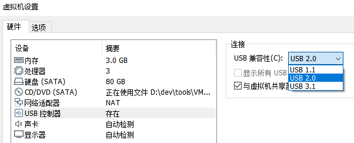
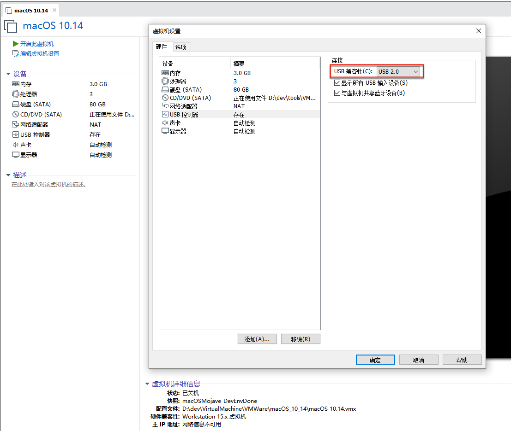
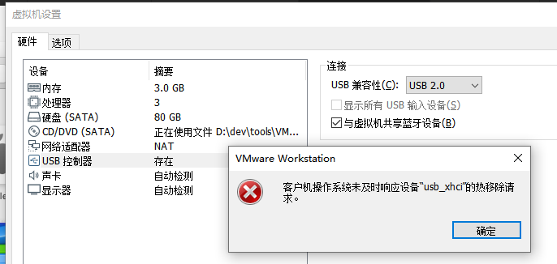
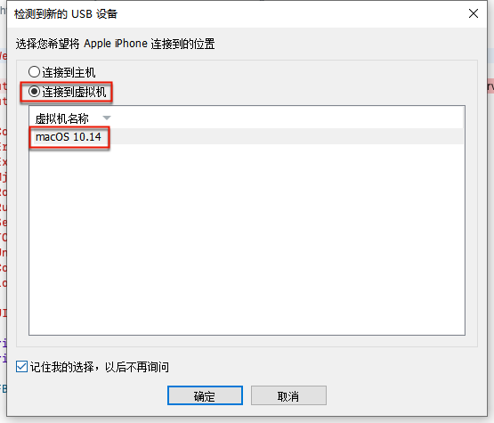
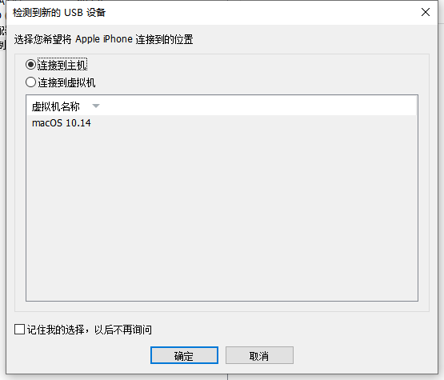
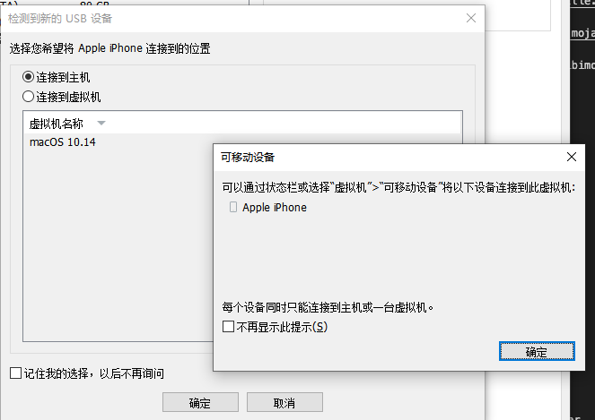
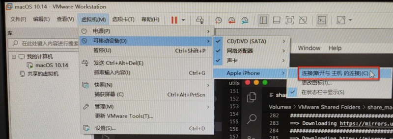
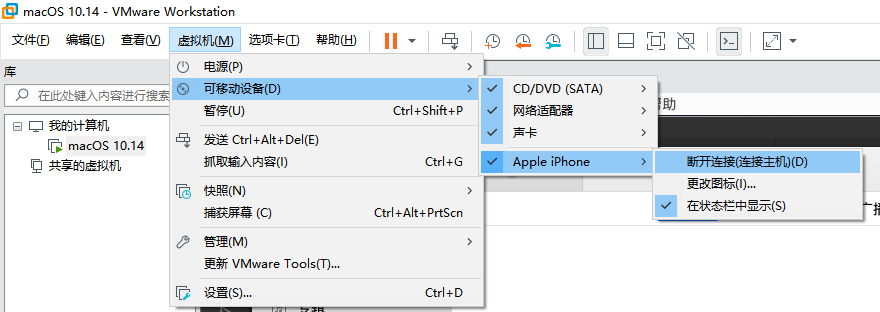

无法识别iPhone
虚拟机macOS识别外部主机Win中插入的iPhone
- 背景：USB控制器 默认：
USB兼容性：USB 3.1 - 问题：会导致虚拟机macOS中无法识别插入的iPhone（Phone7P）
- 解决办法：改为
USB2.0- 
- 

其他相关
客户机操作系统未及时响应设备 usb_xhci的热移除请求
如果出现：客户机操作系统未及时响应设备 usb_xhci的热移除请求。

则最好是：关闭虚拟机macOS，再去更改USB设置，即可。
插入USB设备后的连接选项
第一次插入iPhone到Win中时，会有弹框，记得选择：
连接到虚拟机- 选择当前的虚拟机：
macOS 10.14
- 选择当前的虚拟机：

且勾选：记住我的选择，以后不再询问，再点击确定 -> 这样以后每次插入，就不会再有弹框询问了
更改USB连接选择
不过，万一不小心选错成默认的：
连接到主机- 即当前的host=Windows电脑

则也是可以另外再去更改选项的。且VMWare也很贴心，有对应的提示告诉你后续去哪里改：

即，去 虚拟机-》可移动设备 里去改：
- 虚拟机-》可移动设备-》Apple iPhone -》 连接（断开与主机的连接）
- 
另外：
如果后续已正常把iPhone连接到了macOS，则此处显示的是：
虚拟机-》可移动设备-》Apple iPhone -》 断开连接（连接主机）- 